SMK Sains Pertiwi
Profil
Sejarah
Visi Misi
Tugas & Fungsi
Tenaga Pendidik
Peta Sekolah
Program Sekolah
Program Kerja
Hubungan Industri
Program Inovasi
Program Bussiness Center
Program Keahlian
Rekayasa Perangkat Lunak
Teknik Elektronika Industri
Teknik Mesin
Sistem Informasi
Teknik Otomasi Industri
Teknik Pendingin & Tata Udara
Teknik Mekatronika
Produksi Film & Program Televisi
Kegiatan Sekolah
Kalender Akademik
PPDB
Ekstrakurikuler
Berita
Berita Sekolah
Berita Pendidikan
Galeri
Galeri Foto
Galeri Video
Kontak
PPDB
PPDB
Program Keahlian SMK Sains Pertiwi
Rekayasa Perangkat Lunak
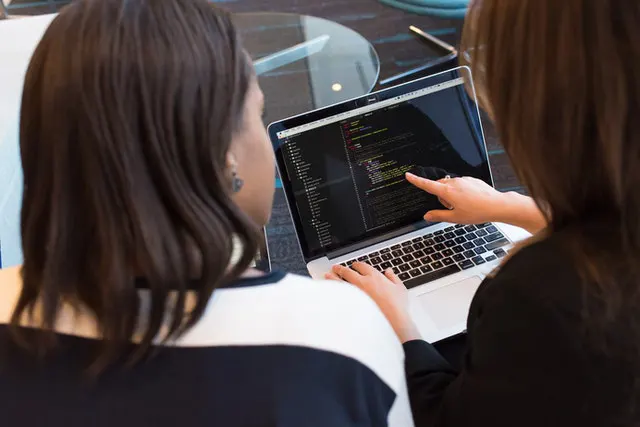
Lama Belajar 3 Tahun
Pembelajaran Kejuruan :
Komputer dan Jaringan Dasar
Pemrograman Dasar
Dasar Desain Grafis
Pemodelan Perangkat Lunak
Basis Data
Pemrograman Berorientasi Obyek
Pemrograman Web dan Perangkat Bergerak
Produk Kreatifdan Kewirausahaan
Prospek pekerjaan lulusan Rekayasa Perangkat Lunak
Fullstack, Backend, dan Frontend Programmer
Desainer UI / UX - Web dan Mobile
Technical Writer
Quality Assurace (QA)
IT Support
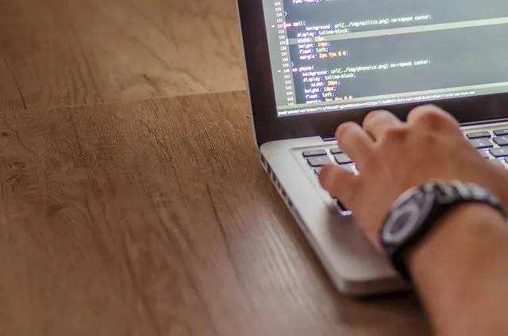
Teknik Elektronika Industri
Lama Belajar 3 Tahun
Pembelajaran Kejuruan :
Kerja Bengkel dan Gambar Teknik
Dasar Listrik dan Elektronika
Dasar Pemrograman
Mikroprosessor dan Mikrokontroller
Penerapan Rangkaian Elektronika
Sistem Pengendali Elektronik
Pengendali Sistem Robotik
Pembuatan, Perbaikan, dan Pemeliharaan Peralatan Elektronika
Produk Kreatif dan Kewirausahaan
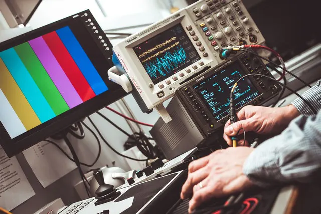
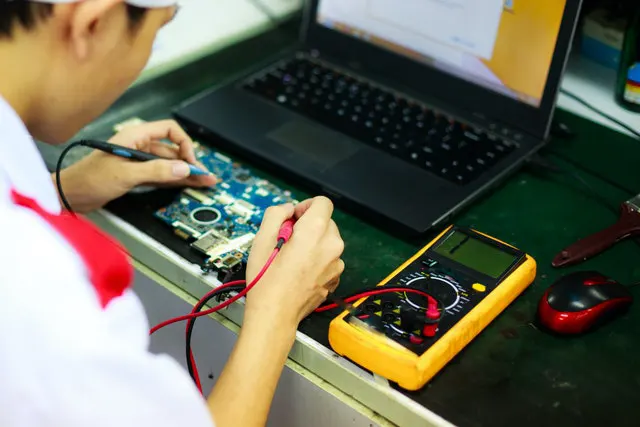
Prospek pekerjaan lulusan Teknik Elektronika Industri
Industri Telekomunikasi
Industri Minyak Dan Gas
Industri Manufaktur
Industri Otomotif
Industri Pembangkit Listrik
Tenaga Pendidik
Ahli Robotik
Wirausaha
Teknik Mesin
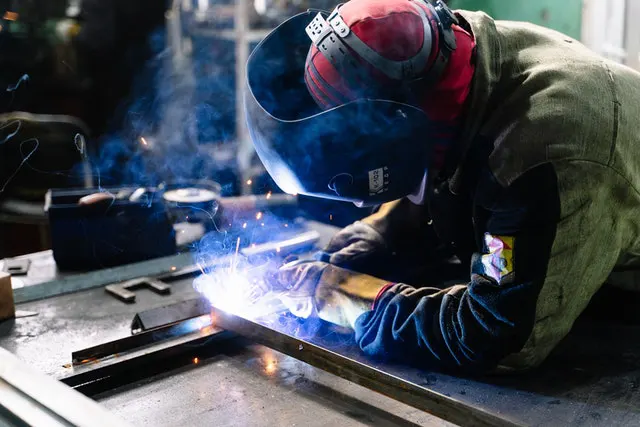
Lama Belajar 3 Tahun
Pembelajaran Kejuruan :
Teknik Pemesinan
Teknik Pengelasan
Teknik Pengecoran Logam
Teknik Mekanik Industri
Teknik Perancangan dan Gambar Mesin
Teknik Fabrikasi Logam dan Manufaktur
Prospek pekerjaan lulusan Teknik Mesin
Teknisi Fabrikasi
Operator Mesin Perkakas
Injection Molding Setter
Staff Produksi
Teknisi Crane
Petugas Pemeliharaan Kabel Listrik
Pengusaha di Bidang Mesin
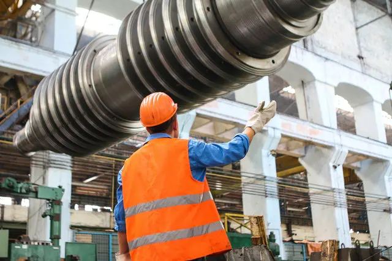
Sistem Informasi
Lama Belajar 4 Tahun
Pembelajaran Kejuruan :
Komputer dan Jaringan Dasar
Pemrograman Dasar
Dasar Desain Grafis
Infrastruktur Komputasi Awan (IaaS)
Platform Komputasi Awan (PaaS)
Layanan Komputasi Awan (SaaS)
Sistem Internet of Things (SloT)
Sistem Keamanan Jaringan
Produk Kreatif dan Kewirausahaan
Prospek pekerjaan lulusan Sistem Informasi
Data Analyst
Data Scientist
Computer Engineering
Software Developer
ERP Consultant
UI/UX Developer
Wirausaha
Pendaftaran Peserta Didik Baru segera dibuka
Lihat Informasi PPDB
Teknik Otomasi Industri
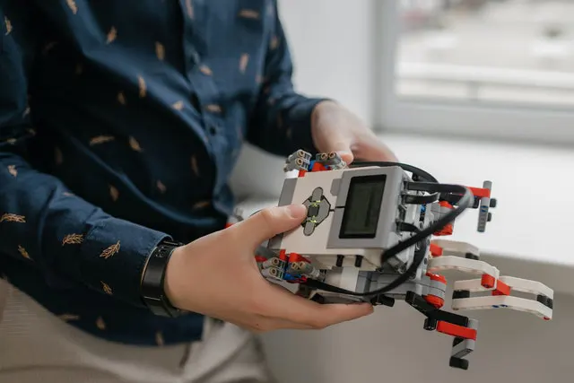
Lama Belajar 3 Tahun
Pembelajaran Kejuruan :
Gambar Teknik Listrik
Dasar Listrik dan Elektronika
Pekerjaan Dasar Elektromekanik
Piranti Sensor dan Aktuator
Sistem Kontrol Elektromekanik dan Elektronik
Sistem Kontrol Elektropneumatik
Sistem Kontrol Terprogram
Produk Kreatif dan Kewirausahaan
Prospek pekerjaan lulusan Teknik Otomasi Industri
Automation Engineer
Programmer
Maintenance Engineer
Sales and Application Engineer
Wirausaha
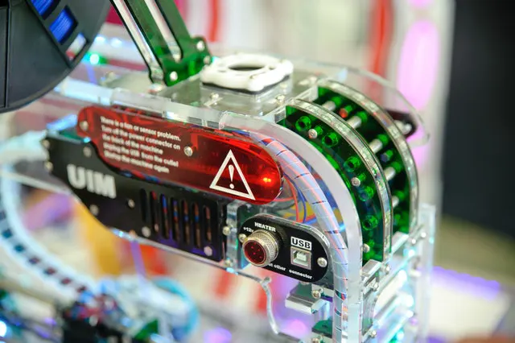
Teknik Pendingin & Tata Udara
Lama Belajar 3 Tahun
Pembelajaran Kejuruan :
Gambar Teknik Kelistrikan
Dasar Listrik dan Elektronika
Pekerjaan Dasar Elektromekanik
Sistem dan Instalasi Refrigerasi
Sistem dan Instalasi Tata Udara
Sistem Kontrol Otomatik
Kontrol Refrigerasi dan Tata Udara
Produk Kreatif dan Kewirausahaan
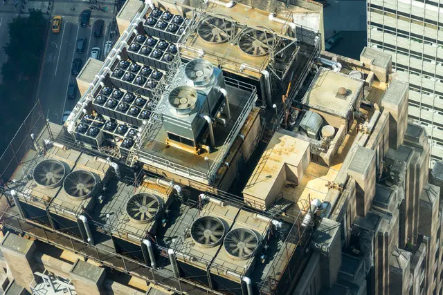
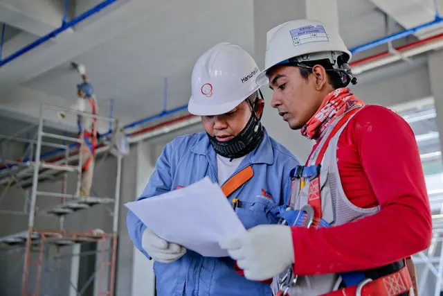
Prospek pekerjaan lulusan Teknik Pendingin & Tata Udara
Karyawan pada Perusahaan Teknik Pendingin
Karyawan pada Perusahaan Umum
Wirausaha
Teknik Mekatronika
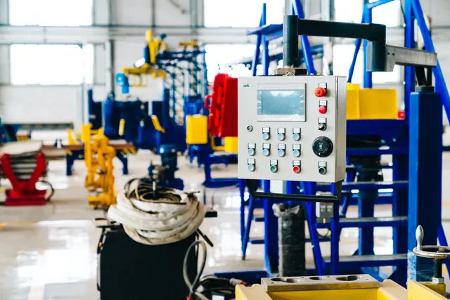
Lama Belajar 3 Tahun
Pembelajaran Kejuruan :
Teknik Kerja Bengkel dan Gambar Teknik
Teknik Dasar Listrik dan Elektronika
Teknik Pemrograman, Mikroprosesor dan Mikrokontroller
Teknik Kontrol Sistem Mekatronik
Sistem Mekatronik Berbasis CAE
Sistem Robotik
Perawatan dan Perbaikan Peralatan Mekatronik
Produk Kreatif dan Kewirausahaan
Prospek pekerjaan lulusan Teknik Mekatronika
Perusahaan Tambang
Perusahaan Bidang Mesin Industri
Industri Otomotif
Perusahaan Alat Medis
Desainer Mesin
Perusahaan Elektronik
Maintenance Pabrik Mesin
Industri Farmasi
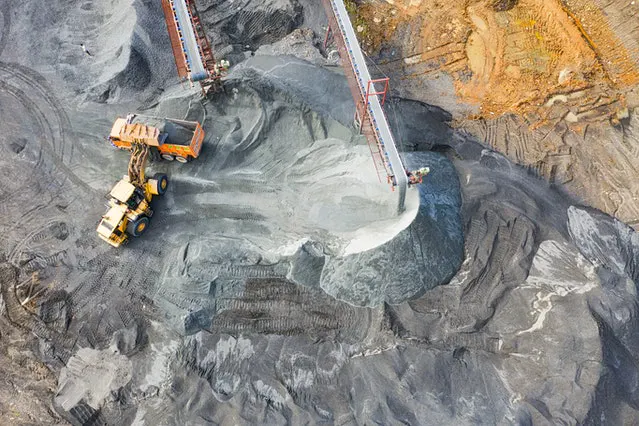
Produksi Film & Program Televisi
Lama Belajar 3 Tahun
Pembelajaran Kejuruan :
Komunikasi Massa
Dasar Seni Audio Visual
Produksi Audio Visual
Penulisan Naskah
Manajemen Produksi
Penyutradaraan
Kamera dan Pencahayaan
Tata Suara
Tata Artistik
Editing Audio dan Video
Produk Kreatif dan Kewirausahaan
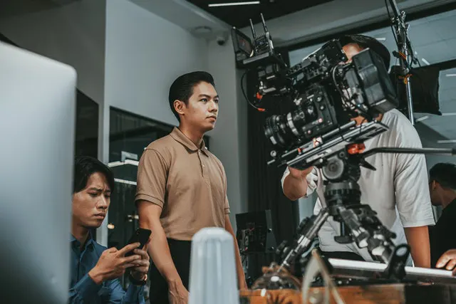
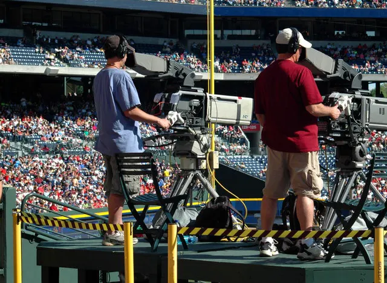
Prospek pekerjaan lulusan Produksi Film & Program Televisi
Sutradara
Penulis Naskah
Produser TV / Film / Video
Operator Kamera untuk Televisi, Video, dan Film
Editor Film dan Video
Teknisi Suara
Teknisi Perlengkapan Kamera dan Fotografi
Wirausaha
share